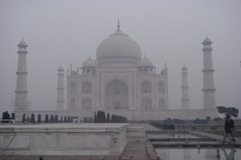
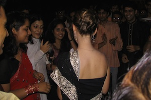

"Bonjour, direction des accords d'échange de votre chère école, il n'y a plus de place aux Etats-Unis comme vous postuliez initialement, mais vous devez partir pour valider votre diplôme. Où irez-vous, répondez-moi maintenant nous attribuons les places". "Bien. Que reste-t-il, loin"? "Au choix la Chine, l'Afrique du Sud ou l'Inde". "Et où est-ce en Inde"? "Plusieurs possibilités, Ahmedabad, Bangalore, Delhi.. ou Calcutta".
Tant qu'à partir là-bas, autant y aller jusqu'au bout : Indian Institute of Management of Calcutta (IIMC), me voilà !
Elle est en Inde
Arouse my senses !
la vue

Ne pas chercher à être original à tout prix. Assis sur l'esplanade de marbre froid du Taj Mahal, un petit matin de décembre, sans autre monde que quelques amis et une couverture pour se réchauffer.
Savourer ce Palais de la Couronne, imprégner un souvenir impérissable de ce monument à l'amour, mausolée de Mumtaz Mahal. Nous imaginons ce qu'aurait été ce paysage si son jumeau noir avait été construit pour son époux moghol, relié entre eux par un pont d'argent.
l'odeur

Qui a dit que ce site serait glamour, personne? Et bien personne a raison.
L'odeur de la rue est le plus souvent forte, âcre même, mêlée de cuisine, d'épices, de dessous de bras aspergés d'eau de cologne. Les transports restent un sommet, le train en sleeper class scorant champion toutes catégorie. Qui donne lieu à des bonheurs simples : utiliser une barre de savon Dove après 40 heures de trajet, ca n'a pas de prix.
le son

Bollywood! Les soirées sont impayables. On s'aligne tel un club de country US pour reproduire les chorégraphies des derniers films. Tellement drôle. Where's the party tonight?
Bon à savoir, les boîtes en Inde ferment à 2h, sauf à Calcutta, 4h, ce qui en fait la plus grande ville de fête. Enfin je n'ai pas pu m'en rendre compte, j'étudiais.. (papa, frérot, si vous me lisez).
le toucher

Un de mes meilleurs souvenirs.
Pour Diwali, la fête des lumières du mois d'octobre, nous nous habillons tous en saris. C'est parti pour une virée shopping d'une après midi dans les upper-end mall avec mes amies Palavi et Robina. Essayage sur essayage, soie, sequin et broderies sous les doigts. Nos goûts diffèrent légèrement (non, je ne porterai pas un sari rose bonbon. Même si je ressemblerai à Barbie ? Justement). Accompagné de thé et de fous rires, et me voilà de dos. Je n'ai bien entendu jamais réussi à le renouer depuis.
le goût

Yammi nourriture végétarienne, partout, délicieuse. Enfin comme en toute chose le prosélitisme n'est pas indispensable, je ne vous invite pas à lire ce merveilleux dépliant 1a) Jesus never ate meat. 1b)Protect the cow, save the world, qui me fut communiqué.
Nous passerons toutefois vite ici sur le régime de survie à la cantine indienne Kingfisher/pizza (+7kilos). Nous ne développerons pas non plus la recherche d'un tire-bouchon dans Calcutta pour ouvrir une bouteille de.. dealcoholized wine (pouah - oui, nous ne nous en sommes aperçu qu'après).
le guy
Ca c'est mon crew!
Je ne suis pas reconvertie en frère Rappetout, je joue au cricket avec les potes de l'IIMC. Des grands frères patibulaires mais presque, adorables, toujours ravis de nous aider sur le campus. Ce qui donne espoir dans un pays où la condition féminine doit toujours largement être améliorée. Ce sont ces étudiants qui vont faire changer les choses.
Note: IIMC, promo MBA 2006: 92% de garçons. Il y a du chemin.
Pimp my eyes !
Mes jolis souvenirs
IIMC mon amour: le campus

On the way to Kolkata

Un tramway nommé old school

Petite fille de Bénares
Sur le Gange, à Varanasi

Sur le Gange la nuit, gath

Street foot à Kolkata

Que personne ne fume à la station service!

Un thé au Rajahstan
A l'assaut de l'Himalaya

L'origine du Gange